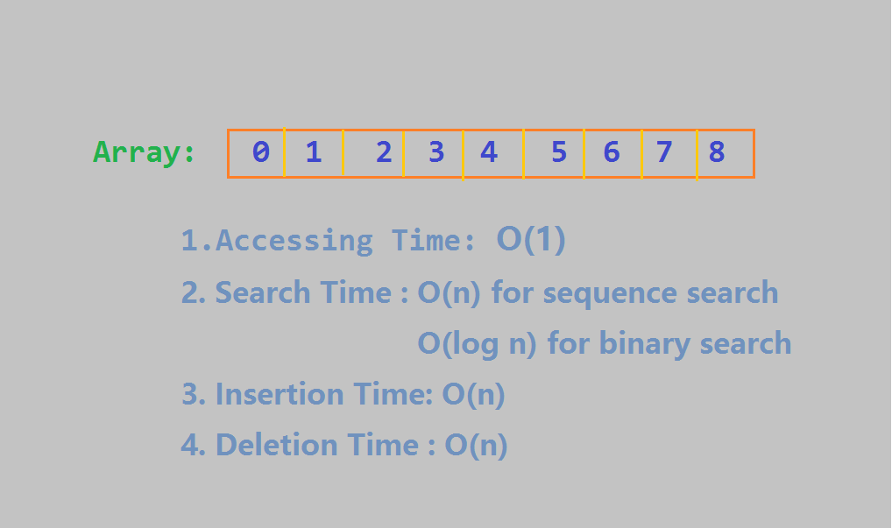
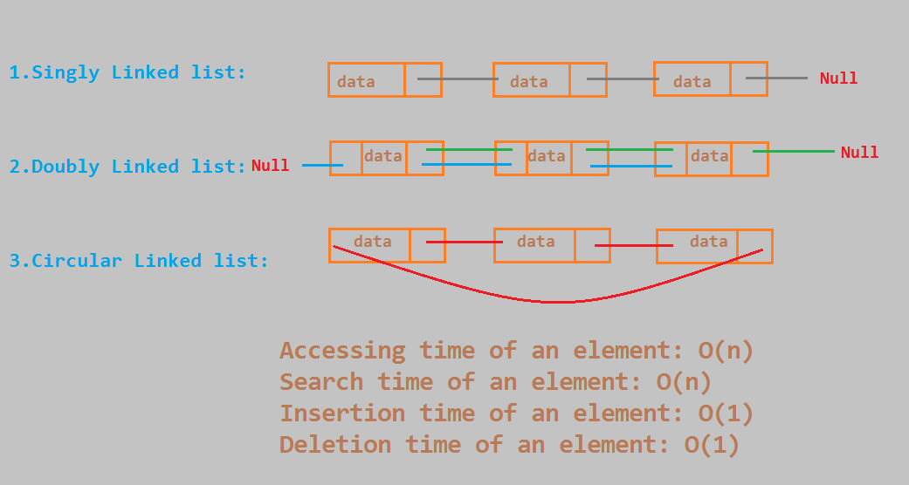
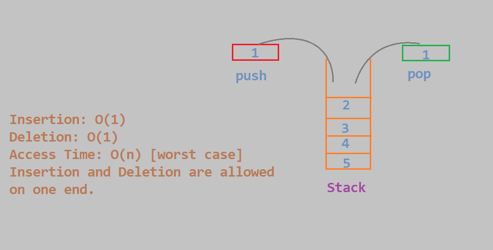
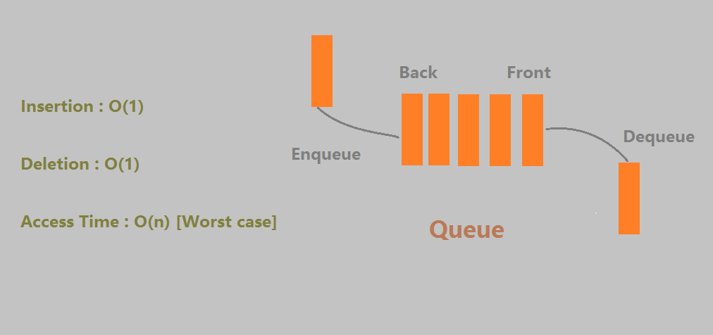

数据结构是在计算机中组织数据的特定方式，以便计算机可以更有效的使用数据。主要的目的是减少不同任务的空间和时间复杂度。本文主要介绍一些常用的线性数据结构 — 译自 GeeksforGeeks.
下面是一些常用的线性数据结构 -
- 数组 (Array)
- 链表 (Linked List)
- 栈 (Stack)
- 队列 (Queue)
数组 (Array)
数组是一种数据结构，用于在连续相邻位置存储同类元素。在存储数据之前必须确定数组的大小。

假设有一数组的大小为$n$，则:
- 访问时间(Accessing Time): $O(1)$ - 因为元素存储在连续的位置，可直接以索引方式访问数组元素;
- 查找时间(Search Time): $O(n)$ - 使用线性查找的情况下,$O(log n)$ - 在数组已经有序的情况下使用二分查找;
- 插入时间(Insertion Time) $O(n)$ - 最坏情况下，插入位置为
0,需要移动所有的元素; - 删除时间(Deletion Time) $O(n)$ - 最坏情况下，删除元素的位置为
0，需要移动所有元素.
使用数组的示例: 假设我们需要将所有学生数据存放到一个类中，这时我们可以考虑使用一个数组来存放它们。这有助于减少变量的使用，因为我们不需要为每个学生数据引用创建单独的变量。只需要遍历数组即可访问所有学生数据。
链表 (Linked List)
链表和数组一样，也是一种线性数据结构，其中每个元素都是一个单独的对象, 称为节点(node)，每个节点都包含数据和对下一个节点的引用。

常见的链表类型 -
单链表 (Singly Linked List)
单链表中的每个节点的指针域存放下一个节点的引用地址或null,形如： 1 -> 2 -> 3 -> 4 -> NULL。
双向链表 (Doubly Linked List)
双向链表拥有两个指针域，一个指向上一个节点的引用地址或为null，一个指向写一个节点的引用地址或为null。这种数据结构的优点是我们可以在两个方向上进行遍历，对于删除，不需要显式访问前一个节点。形如 : NULL <- 1 <- -> 2 <- -> 3 <- -> 4 -> NULL。
循环链表 (Circular Linked List)
循环链表中的所有节点连接成一个环，没有任何节点的下一个节点或上一个节点是指向NULL的。循环链表可以是单向循环链表，也可以是双向循环链表。该数据结构的优点是可以将任意节点作为起始节点。这种链表在实现循环队列时很有用。例如： 1 -> 2 -> 3 -> 1 最后一个节点指向第一个节点。
- 访问单个元素时间(Accessing time of an element): $O(n)$
- 查找单个元素时间(Search time of an element): $O(n)$
- 插入单个元素时间(Insertion of an element): $O(1)$, 获得插入节点的前驱节点即可.
- 删除单个元素时间(Deletion of an element): $O(1)$, 同样获得删除节点的前驱结点即可.
注释:链表适用于存储的数据大小未知，或者需要频繁插入/删除的数据。链表的一大缺点是不允许随机访问。使用数组，可以在$O(1)$时间访问第$i$个元素。而使用链表，需要$\theta(i)$时间。
栈 (Stack)
栈拥有先进后出(FILO)或后进先出(LIFO)的特点。有两个主要的操作: push(进栈)和pop(出栈)。栈的操作都发生顶部的同一端上，它可以通过数组和链表实现。

栈可用于维护函数的调用(最后一个被调用的函数必须先完成执行)，我们总是可以在栈的帮助下删除递归。栈也用于反转字符串，检查平衡括号或者在编辑器中使用撤销操作等。
队列 (Queue)
队列有先进先出(FIFO)/后进后出(LILO)的特点。有enqueue(进队列)和dequeue(出队列)两个主要操作。从队尾入队，并从对首出队列。队列和栈一样可以用数组实现，也可以用链表实现。

队列通常使用在资源在多个用户之间进行共享并按先到先得的情况下。例如：CPU调度，磁盘调度。队列还可用于在两个进程之间异步传输数据(数据不一定以与发送的相同速率接受)。如：IO缓冲区，管道，文件IO等。
循环队列 (Circular Queue)
循环队列，这种数据结构主要是在使用数组实现队列时，用于减少空间的浪费。